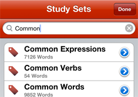

Click on the Study Sets tab and choose a set by touching its name. Sets are organized into folders and are also searchable.
To search, slide your finger down the screen to reveal a search bar. Search results are updated in real time, and they are fast!
Tap on the Study Sets tab and press + to add a set. You can add words to the set using the Search. You can also add cards to a set whilst in practice mode using the Add To Set button.
We believe an iPhone is a great way to practice, but not great for creating flash cards. For now this functionality is limited. However we are thinking of ways to solve this.